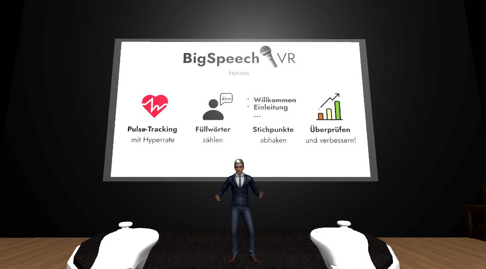
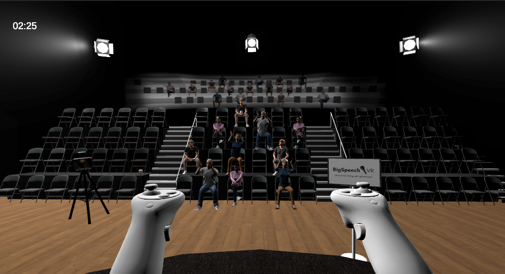
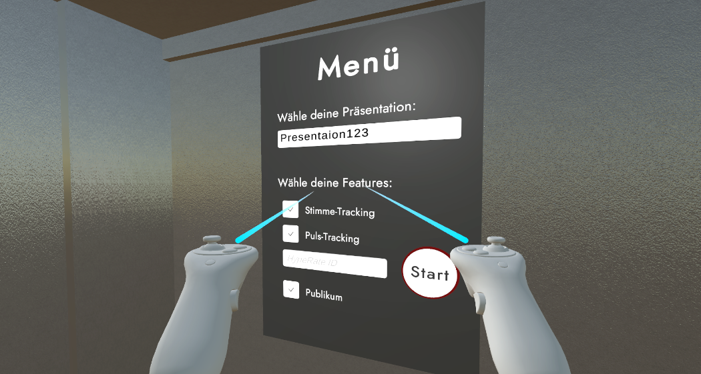

Big Speech VR

Projektbeschreibung
Big Speech VR ist ein innovatives Projekt, das darauf abzielt, die Fähigkeiten von Personen im Bereich der Präsentation durch einen virtuellen Präsentationstrainer namens BigSpeechVR zu verbessern. Das Projekt wurde in Unity entwickelt und bietet eine interaktive Umgebung, in der Nutzer ihre eigenen Präsentationen importieren und vor einem virtuellen Publikum präsentieren können. Durch die Integration verschiedener Funktionen wie interaktives Publikum, Pulstracking und Voicetracking bietet BigSpeechVR ein umfassendes Feedbacksystem, das es den Nutzern ermöglicht, ihre Präsentationsfähigkeiten zu verbessern.
Funktionalitäten
Präsentationsimport: Nutzer können ihre eigenen Präsentationen in das System importieren, einschließlich der Möglichkeit, Stichwörter als Textdatei zu importieren. Auswahl von Features: Vor Beginn der Präsentation können Nutzer verschiedene Features auswählen, darunter ein interaktives Publikum, Pulstracking und Voicetracking. Präsentationsmodus: Nach der Auswahl der gewünschten Features können Nutzer ihre Präsentation starten und vor einem animierten NPC-Publikum präsentieren. Feedbacksystem: Nach Abschluss der Präsentation erhalten die Nutzer eine detaillierte Auswertung, einschließlich Pulswerten, der Anzahl der verwendeten Füllwörter, der Effektivität der Stichpunkte und der Gesamtdauer der Präsentation. Diese Auswertung ermöglicht es den Nutzern, ihren Fortschritt im Laufe der Zeit zu verfolgen und ihre Fähigkeiten zu verbessern. Vergleich mit vorherigen Versuchen: Nutzer haben die Möglichkeit, ihre aktuellen Präsentationen mit ihren vorherigen Versuchen zu vergleichen, um ihren Fortschritt zu überwachen und Verbesserungen zu erkennen.
Technische Details
Das BigSpeechVR-Projekt verwendet verschiedene Technologien und Ressourcen, darunter: 3D-Modelle: Alle relevanten 3D-Modelle im Spiel, einschließlich des Studios, des Tutorials und des Handmenüs, wurden von den Entwicklern erstellt. Skripte: Verschiedene benutzerdefinierte Skripte wurden entwickelt, um die Funktionalitäten des Spiels zu steuern, darunter Skripte zur Datenverarbeitung, zur Steuerung von NPC-Reaktionen und zur Handhabung der Präsentationslogik. Integration von Drittanbieter-APIs: BigSpeechVR integriert externe APIs wie Hyperate für das Pulstracking und wit.ai für die Füllwörtererkennung. Verwendung von Paketen und Assets: Das Projekt nutzt verschiedene Unity-Pakete und Assets, darunter OpenXR, XR Core Utilities und TextMeshPro, um eine immersive VR-Erfahrung zu bieten.
